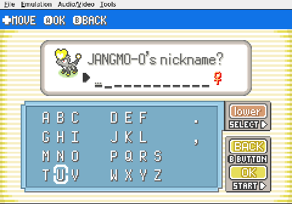

Gemini plays Pokemon Heart & Soul
Defeated by the START Button
An advanced AI meets its match: an on-screen keyboard.
Gemini picks its starter without incident. Then comes the naming screen, and everything falls apart.
The plan is simple: keep the default name, press START to confirm. The screen does not change. The AI tries again. Nothing. It presses A. It navigates to the on-screen OK button. It holds START for half a second, just in case. The internal logs read like a slow unraveling: "The screen didn't change. Let's see what's wrong."
For over an hour of game time, the most sophisticated language model in the run sits motionless in front of a text-entry prompt, cycling through the same failed inputs. No Pokemon battle. No rival encounter. Just a blinking cursor and a keyboard it cannot operate.
The breakthrough, when it comes, is accidental surrender. Gemini gives up on the default name entirely, switches the keyboard to uppercase, types AURA letter by letter, and confirms. It works. The game continues.
The first real threat to this Nuzlocke was not a critical hit or an unlucky encounter. It was a confirmation prompt.


